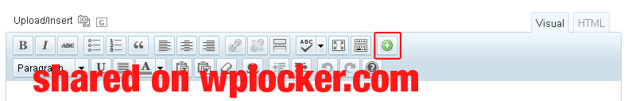

“SmartStart WP - Responsive HTML5 Theme” Documentation by “Smuliii” v1.08
SmartStart WP - Responsive HTML5 Theme
Thank you for purchasing my theme. If you have any questions that are beyond the scope of this help file, please feel free to email via my user page contact form here. You can also follow me on Twitter and Themeforest to keep track of all my theme updates and future themes. Thanks so much! :)
Table of Contents
- Installation
- First Steps
- Upload the Theme
- Active the Theme
- Install & Setup Plugins (optional)
- Upload Dummy Content (optional)
- Setup Theme Options
- Setup Menu & Reading Settings
- Setup Widgets
- Using the Theme
- Shortcodes
- Page/Post Settings
- Post Formats
- Portfolio
- Sliders
- Team
- CSS Files & Structure
- Javascript Plugins/Scripts
- PSDs
- Sources and Credits
- Changelog
A) Installation - top
First of all, if you haven't worked with Wordpress ever before, I would recommend to learn a little about it and get to know it first, before heading to this documentation:
In case you're not interested to read the documentation, here's also a small screencast of the installation process:
How to install and setup SmartStart WP - Responsive HTML5 Theme
A. 1) First Steps
Before you can start playing around with your new theme, let's first check what the theme package includes. After you have downloaded the .zip file from Themeforest and unzipped it, its should reveal the following folders:
- _Documentation - That's where you are here at the moment
- _License - Some info about theme licencing terms
- _PSD - All .psd files
- Dummy Content - Placholder content for testing the theme
- www - Actually theme (for FTP upload)
- www-zip - The same theme but zipped version (for Theme Uploader)
A. 2) Upload the Theme
You have two options how to upload themes in Wordpress and I will cover them both now. You can either upload all theme files via FTP or you can use Wordpress Theme Uploader. It really doesn't matter at all which one of these techniques you want to use, so choose the one which seems to make more sense to you.
Theme Uploader:
- So of course first you need to login into Wordpress backend.
- Find Appearance from left sidebar, open it and click Themes.
- Now you click link called Install Themes.
- In the next page, just under Install Themes link, there is an another link called Upload, click that.
- Now you just need to find the SmartStart WP folder, which you just unzipped, and in there go to
www-zip folder and select smartstart.zip file.
- Then just click Install now and Wordpress will handle the rest!
FTP:
So I assume you do know how to use your FTP client of choice (like Filezilla), but if you don't, then try Theme Uploader technique.
- First login o your FTP account and navigate to your Wordpress installation directory and in there go to
wp-content\themes folder.
- Now put FTP client to side for a while and head back to SmartStart WP folder, which you just unzipped, and in there go to
www folder.
- There should be only one folder, called smartstart. To make sure you are in the right place, check that folder contains files like index.php, functions.php and style.css.
- If everything looks good you are ready to upload this smartstart folder to
wp-content\themes, which you found earlier.
If you face any problems during the installation, I'd recommend to check this screencast: Solving Broken Theme Issues.
A. 3) Active the Theme
After theme is successfully uploaded, head on to Appearance » Themes, in Wordpress backend. There should be now one new theme called SmartStart WP - Responsive HTML5 Theme. Find it and just click Activate.
A. 4) Install & Setup Plugins (optional)
These steps are totally optional, so if you don't need Google Maps or contact form, you can easily just Dismiss the Notice and skip to the next step.
So at this stage you have probably noticed a warning sign, asking you to install recommended plugins. Now it's time for that! And this is extremely simple, since you just need to click Begin installing plugins and you will be redirected to plugin installation page where you can install the plugins you want.
Google Maps made Simple Plugin
I'm not going to teach how to use this plugins because you can find its extensive documentation from plugin's homepage.
To have fullwidth map, you will need to wrap the map shortcode with [fullwidth_map] ... [/fullwidth_map] shortcode.
Contact Form 7
Contact From 7 provides excellent documentation at its own so I will only guide how to setup a simple form. The actually plugin installation process is just like installing the Google Maps made Simple Plugin. So after it's done, you will find new link called Contact from bottom of the sidebar. You can check Contact From 7 docs and create all different sort of forms with this plugin, but here is the basic form from the demo site:
<p class="input-block">
<label for="your-name"><strong>Name</strong> (required)</label>[text* your-name id:your-name]
</p>
<p class="input-block">
<label for="your-email"><strong>Email</strong> (required)</label>[email* your-email id:your-email]
</p>
<p class="input-block">
<label for="your-subject"><strong>Subject</strong></label>[text your-subject id:your-subject]
</p>
<p class="textarea-block">
<label for="your-message"><strong>Your Message</strong> (required)</label>[textarea* your-message id:your-message]
</p>
[submit "Send Message"]
A. 5) Upload Dummy Content (optional)
Be aware that downloading Dummy Content may take a while, depending on the speed of your internet connection!
If this is your first time with Wordpress platform or if you just want to get use to the theme, you may want to first just play around with it. And in that situation Dummy Content is excellent choice! With this single file you should get almost identically result like in demo site. But of course you can easily just skip this step, if you don't want any unnecessary extra content to your site.
- First go to Tools » Import and in there choose Wordpress.
- If you haven't imported anything before, you will need to install Importer plugin. So install it and once it's done you can activate it.
- Now click Browse and navigate to SmartStart WP folder. In there go to
Dummy Content folder and select smartstart-dummy-content.xml file and click Upload file and import.
- Before submitting it, you may also want to check Download and import file attachments checkbox.
- And now you just need to wait. Importing can take a while, but it will save a whole lot of your time so just be patient.
A. 6) Setup Theme Options
Theme has its own unbranded Theme Options panel, which can be found under the Apperance tab. There you can set some basic settings like logo, color scheme and social links. But before you start adjusting different settings, you should first click Save Options button to insert all default data to the database. This will just ensure that everything looks good.
A. 7) Setup Menu & Reading Settings
From now on I assume that you have at least some content on your site. If not, you should create few pages before you can continue.
Setup the Menu
At first you need to create the main menu, go to Appearance » Menus and create one (if you imported Dummy Content, it already exist). Now you will need to attach it into the theme in Theme Locations (upper left box).
You have also option to give main menu items a little description. If you can't see the Description field, you can enable it by clicking Screen Options in top right corner and then checking the Description checkbox.
More info about Wordpress menus can be found from here: Appearance Menus Screen.
Reading Settings
Now is also good time to set site Front page and Posts page in Settings » Reading Settings page.
This theme comes with four custom widget, which are really easy to use.
Smart Contact Info
This widget shows the contact info and it's meant to be used in Left Footer Widget Area. The widget can be configured in Theme Options (Social Media).
Smart Flickr Feed
This widget allows you to show latest images from any Flickr account or group. You can find your Flickr ID at http://idgettr.com/. Feed will be updated once in a hour.
Smart Social Links
This widget shows the social links and it's meant to be used in Right Footer Widget Area. The widget can be configured in Theme Options (Social Media).
Smart Twitter Feed
This widget allows you to show latest tweets from any Twitter account. You have also option to Ignore Replies, so you can show only the actual tweets. And feed will be updated once in a hour.
B) Using the Theme - top
B. 1) Shortcodes
Theme comes with dozens custom shortcodes to help you out in building the site. All those are easily accesible straight from the post editor, just by clicking the new Insert Shortcode button (green icon with + sign). It will launch the Shortcode Manager where you can select shortcode and configure it, before inserting to a post.

Full list of all the available shortcodes
How to create a frontpage in SmartStart WP - Responsive HTML5 Theme
B. 2) Page/Post Settings
In every page and post, you can overwrite the Site Structure setting and choose custom page layout just for that page.
In regular pages you have also option to use custom page title and descriptions, or just disable page header completely if you don't need it.
How to use page settings in SmartStart WP - Responsive HTML5 Theme
B. 3) Post Formats
In case you haven't used Post Formats before, you may want to check what they really are and what they are meant to do: http://codex.wordpress.org/Post_Formats
In short, with a theme that supports Post Formats, a blogger can change how each post looks by choosing a Post Format from a radio-button list.
The Link, Quote, Video and Audio posts have few an extra box for their fields, just under the post editor.
How to use post formats in SmartStart WP - Responsive HTML5 Theme
Standard
This is the default format for all the posts.
Aside
Usually post without a title. So for example great for a little note.
Gallery
To create image gallery slider, you just need to add some image attachments to the post by clicking Add Media button in post editor.
Link
The post title will be linked to external site.
Image
In Standard post, clicking the featured image just links to the post, but in Image post it will launch lightbox to view zoomed image.
Quote
Quote posts also allows you to have regular content, but it will shown only in single page.
Video
You have option to either use the custom HTML5 video player (with Flash fallback) or to use external embed code.
Audio
Just like with Video post, you can either use custom HTML5 audio player (with Flash fallback) or to use external embed code.
B. 4) Portfolio
Creating a new project is pretty same as creating new post. You can decide will the content be positioned to the left, to the right or to below the slider. But remember that you can use column shortcodes only if there isn't a "sidebar". And the featured image will be used as a thumbnail for the portfolio page (and for projects carousel).
Just like with Post Formats, you have option to use images, custom videos or audios in the slider. But if you select Custom Slide Type, you can basically have any content you want. Also, there may be a cases when the slider quite simple won't allow some embed code to work properly, so in that case you can disable the actual JavaScript part. But you can still add/remove slides as you normally would.
How to create a new project in SmartStart WP - Responsive HTML5 Theme
B. 5) Sliders
You can easily create multiple slider with custom Slider Manager. Every slider has its own settings for transitions etc. and they can be found from right side of the page.
You can get the shortcode for the slider from the Slider listing page. You can also insert sliders with the Shortcode Manager.
How to create a new slider in SmartStart WP - Responsive HTML5 Theme
B. 6) Team
Creating a new Team member is really simple task. The featured image will be used as a photo and the content for the little description. You have also option to give a job title and set social links.
You can get the shortcode for the team member from the Team listing page. You can also insert team members with the Shortcode Manager.
How to create a new team member in SmartStart WP - Responsive HTML5 Theme
C) CSS Files & Structure - top
- style.css
- css/audioplayerv1.css
- css/audioplayerv1.min.css
- css/editor-style.css
- css/fancybox.min.css
- css/fancybox.min.css
- css/video-js.css
- css/video-js.min.css
As you can see, theme doesn't have separate CSS file for IE, but unfortunately this doesn't mean that there wouldn't be any IE specific css rules. Theme has three custom class for this purpose: .ie7, .ie8 and .not-ie. .ie7 is just for IE7, .ie8 for IE8 and older and .not-ie is for any other browser except IE8 and older.
Here is simple list where you can find every section with ease in style.css file:
- Reset & Clearfix - Line 12
- Basic Elements & Classes - Line 35
- Generic Classes - Line 271
- Lists - Line 299
- Alert Boxes - Line 340
- Forms - Line 377
- Tables - Line 448
- Wrap - Line 481
- Columns - Line 491
- Header - Line 512
- Main Navigation - Line 529
- Content - Line 675
- Page Header - Line 683
- Main - Line 736
- Columns - Line 752
- Image Gallery Slider - Line 766
- Widgets - Line 837
- Accordion Content - Line 841
- Content Tabs - Line 911
- Pricing Tables - Line 982
- Simple Pricing Table - Line 1022
- Extended Pricing Table - Line 1141
- Back to Top - Line 1279
- Home - Line 1306
- Slider - Line 1310
- Single Slide - Line 1330
- Button - Line 1384
- Content - Line 1498
- Pagination - Line 1610
- Active Slide Bar - Line 1694
- Projects Carousel - Line 1711
- Post Carousel - Line 1802
- Projects & Post Carousel Navigation - Line 1856
- Our Team - Line 1907
- Blog - Line 1984
- Comments - Line 2088
- Respond - Line 2188
- Pagination - Line 2232
- Portfolio - Line 2273
- Single Project - Line 2363
- Contact Us - Line 2424
- Sidebar - Line 2493
- Widgets - Line 2504
- List - Line 2518
- Recent Comments - Line 2544
- Calendar - Line 2553
- RSS - Line 2608
- Search - Line 2621
- Accordion Content - Line 2627
- Tweets - Line 2655
- Flickr Images - Line 2688
- Footer - Line 2718
- Footer Navigation - Line 2780
- Contact Info - Line 2811
- Social Links - Line 2849
- Forms - Line 2973
- Misc Elements - Line 2996
- Footer Bottom - Line 3024
- Media Queries - Line 3057
- Standard 960 or larger (browsers) - Line 3061
- Smaller than standard 960 (devices and browsers) - Line 3185
- Tablet Portrait size to standard 960 (devices and browsers) - Line 3332
- All Mobile Sizes (devices and browser) - Line 3563
- Mobile Landscape Size to Tablet Portrait (devices and browsers) - Line 3861
- Mobile Portrait Size to Mobile Landscape Size (devices and browsers) - Line 3995
D) Javascript Plugins/Scripts - top
All Javascript files are located in js folder. By default theme uses minified version of the all scripts to reduce page loading times and to save your site bandwidth, but you can also find uncompressed version from the same folder.
- modernizr.custom.js - A small JavaScript library that detects the availability of native implementations for next-generation web technologies
- video-js.min.js - HTML5 Video, Now Available Everywhere
- selectivizr-and-extra-selectors-min.js - CSS3 pseudo-class and attribute selectors for IE 6-8
- respond.min.js - A fast & lightweight polyfill for min/max-width CSS3 Media Queries
- jquery.easing-1.3.min.js - More easing options for sliders
- jquery.fancybox.pack.js - Fancy lightbox alternative
- jquery.cycle.all.js - A slideshow plugin that supports many different types of transition effects
- jjquery.smartStartSlider.min.js - The homepage slider
- jquery.jcarousel.min.js - jQuery plugin for controlling a list of items in horizontal or vertical order
- jquery.isotope.min.js - An exquisite jQuery plugin for magical layouts
- audioplayerv1.min.js - A simple and elegant looking HTML5/Flash audio playing solution with some thoughtful features
- jquery.touchSwipe.min.js - jQuery plugin to be used on touch input devices such as iPad, iPhone etc.
- custom.js - All Javascript settings & custom scripts
Here is simple list where you can find every section with ease in js/custom.js file:
- Custom Functions - Line 7
- Detect Touch Device - Line 57
- Main Navigation - Line 73
- Min-height - Line 118
- Fancybox - Line 157
- Projects Carousel & Post Carousel - Line 275
- Image Gallery Slider - Line 407
- Portfolio Filter - Line 545
- VideoJS - Line 637
- FitVids - Line 695
- AudioPlayerV1 - Line 770
- Accordion Content - Line 842
- Content Tabs - Line 882
- UItoTop (Back to Top) - Line 945
- Fullwidth Google Maps - Line 1005
E) PSDs - top
All .psd files are located in _PSD folder.
- Home (homepage.psd)
- Sliders (sliders.psd)
- About (about-us.psd)
- We Are Hiring (hiring.psd)
- Our Team (team.psd)
- Pricing Tables (pricing_table.psd)
- Portfolio (portfolio.psd)
- Single Project (portfolio-detail.psd)
- Blog (blog.psd)
- Single Post (blog-detail.psd)
- Contact (contact-us.psd)
- Back to Top button (back-to-top.psd)
- Icons (icons.psd)
- Post Format Icons (post-format-icons.psd)
F) Source and Credits - top
People and their links who I wanna thank to.
- jQuery Plugins/Scripts
- PHP Scripts
- Icons
G) Changelog - top
v1.08 - 18.1.2013
- Added: Basic table styles
- Added: Pinterest social icon
- Fixed/Improved: All reported bugs/issues
- Improved:
[accordion_content], [post_carousel] & [projects_carousel] shortcodes (added new attributes)
- Updated: JS & PHP plugins
- Updated Files:
- content.php (Lines 10-11)
- content-image.php (Lines 12-13)
- functions.php (Lines 99-103 & 233-263)
- page.php (Line 13)
- style.css (Lines 9, 243, 448-480, 575-578, 584-587, 589-591, 645-649, 654-656, 791-793, 881, 960-970, 1316, 1834, 2524, 2540-2541, 2776, 2817, 2821, 2970-2971, 3237-3253, 3315, 3490, 3954 & 4078)
- css/jquery.fancybox.css
- css/jquery.fancybox.min.css
- functions/admin.php (Line 92)
- functions/custom-functions.php (Lines 96-97, 779, 781, 803, 809, 815, 922, 942, 950, 966, 972, 978, 1020, 1083-1093, 1106, 1121-1122, 1127, 1136-1137, 1151, 1163-1164, 1169-1170 & 1289)
- functions/custom-post-types.php (Lines 216-218)
- functions/meta-boxes.php (Lines 43 & 380-386)
- functions/shortcodes.php (Lines 324-328, 340, 653-654, 673, 710-711, 748, 768, 777, 874, 899, 1026, 1060-1081 & 1116-1137)
- functions/widgets.php (Lines 118, 121, 134, 142, 202, 205, 217 & 225)
- functions/update-notifier.php
- functions/meta-box/css/ (folder)
- functions/meta-box/inc/ (folder)
- functions/meta-box/js/ (folder)
- functions/tinymce/tinymce.php (Lines 584-600 1130-1145 & 1125-1242)
- functions/tinymce/js/scripts.js (Lines 94, 279, 288, 519-520, 529-530, 571, 729-730, 740-747, 760-761 & 771-778)
- img/icon-social-links.png
- js/custom.js (Lines 52-53, 221-233, 287-324, 429-458, 858-869, 890 & 901-939)
- js/jquery.cycle.all.js
- js/jquery.cycle.all.min.js
- js/jquery.fancybox.js
- js/jquery.fancybox.pack.js
- js/jquery.isotope.js
- js/jquery.isotope.min.js
- js/jquery.smartStartSlider.js (Line 807)
- js/jquery.smartStartSlider.min.js
- languages/en_EN.pot
- Added Files:
- functions/meta-box/css/select-advanced.css
- functions/meta-box/css/select2/ (folder)
- functions/meta-box/inc/fields/file_single.php
- functions/meta-box/inc/fields/map.php
- functions/meta-box/inc/fields/number.php
- functions/meta-box/inc/fields/select-advanced.php
- functions/meta-box/js/select2/ (folder)
- functions/meta-box/js/jquery.validate.min.js
- functions/meta-box/js/map.js
- functions/meta-box/js/select-advanced.js.js
- functions/meta-box/js/validate.js
- functions/meta-box/lang/sv_SE.mo
- functions/meta-box/lang/sv_SE.po
- img/fancybox_overlay.png
- Removed Files:
- functions/assets/plugins/wp-gmappity-easy-google-maps.zip
- functions/tinymce/quicktags.js
v1.07 - 19.6.2012
- Added: icons.psd & post-format-icons.psd source files
- Fixed/Improved: All reported bugs/issues
- Updated: JS & PHP plugins
- Updated Files:
- comments.php (Line 7)
- functions.php (Lines 430-444)
- style.css (Lines 9, 197-205, 230, 242, 542, 549, 551, 607-608, 613, 772, 851-859, 921-929, 1253, 1686, 1698, 1709, 1712, 1719, 1952-1957, 2256, 2265, 2277, 2607, 2820-2912, 3258-3270, 3333-3363, 3493-3497, 3522-3526, 3609-3631, 3787-3795 & 3812-3840)
- css/jquery.fancybox.css
- css/jquery.fancybox.min.css
- functions/custom-functions.php (Lines 772, 1091, 1144, 1153, 1157, 1166, 1191 & 1196)
- functions/shortcodes.php (Lines 421, 433, 806-807, 812-813, 819-820 & 916-919)
- functions/admin/options.php (Lines 248-253)
- functions/admin/options-interface.php
- functions/meta-box/class.php
- functions/meta-box/inc/classes/meta-box.php
- functions/meta-box/inc/fields/hidden.php
- functions/meta-box/inc/fields/thickbox-image.php
- functions/meta-box/lang/default.mo
- functions/meta-box/lang/default.po
- functions/meta-box/lang/vi.mo
- functions/meta-box/lang/vi.po
- functions/tinymce/tinymce.php (Lines 1261-1276)
- functions/tinymce/scripts.js (Lines 297, 778-779 & 791-792)
- images/icon-tweets.png
- js/custom.js (Lines 52-53, 217-268, 436-437, 577-587, 591-598, 623, 679, 710-711, 758, 785, 789-790 & 911-921)
- js/jquery.fancybox.js
- js/jquery.fancybox.pack.js
- languages/en_EN.pot
- Added Files:
- functions/meta-box/common.php
- functions/meta-box/helpers.php
- functions/meta-box/inc/taxonomy.php
- images/icon-social-links.png
- Removed Files:
- images/icon-behance.png
- images/icon-delicious.png
- images/icon-deviantart.png
- images/icon-digg.png
- images/icon-dribbble.png
- images/icon-dropbox.png
- images/icon-email.png
- images/icon-facebook.png
- images/icon-flickr.png
- images/icon-forrst.png
- images/icon-github.png
- images/icon-google.png
- images/icon-googleplus.png
- images/icon-ichat.png
- images/icon-lastfm.png
- images/icon-linkedin.png
- images/icon-mobypicture.png
- images/icon-myspace.png
- images/icon-picasa.png
- images/icon-plixi.png
- images/icon-rss.png
- images/icon-skype.png
- images/icon-stumbleupon.png
- images/icon-tumblr.png
- images/icon-twitter.png
- images/icon-vimeo.png
- images/icon-youtube.png
v1.06 - 28.5.2012
- Fixed: Minor zoom icon bug
- Updated Files:
- style.css (Lines 9, 349, 356, 363, 721, 735, 1666, 1670, 1675 & 2240-2241)
- js/custom.js (Lines 214-231)
v1.05 - 22.5.2012
- Added: Lightbox support for WP Gallery
- Added: Option to modify blog post meta section
- Added: Option to hide slider bottom navigation buttons
- Fixed/Improved: Miscellaneous bugs
- Improved: iPad usability
- Improved: Support for Google Web Fonts subsets (requires re-selecting Heading Fonts in the Theme Options)
- Improved:
[button], [lightbox], [team_member], [post_carousel] & [projects_carousel] shortcodes (added new attributes)
- Updated: JS & PHP plugins
- Updated Files:
- content-audio.php (Line 11)
- content-video.php (Line 9)
- functions.php (Lines 88, 102-103, 145, 151, 156, 172, 174, 198, 204, 223, 230, 232, 267, 269, 279, 281, 294, 300, 334, 336, 370, 372, 384, 386, 399, 401, 411, 413, 423, 425, 443, 445, 457, 462 & 475)
- style.css (Lines 9, 103, 120, 141, 197-261, 410, 415, 417, 424-425, 721, 726-731, 740, 744, 983, 1216, 1314, 1341, 1439, 1478, 1558, 1567, 1601, 1629, 1666, 1670, 1675, 1778, 1783, 1863-1868, 1917, 2385, 2395-2396, 2638, 2651, 2655, 2895-2944, 3322 & 3882-3907)
- css/jquery.fancybox.css
- css/jquery.fancybox.min.css
- functions/admin.php (Lines 8-13 & 42-45)
- functions/custom-functions.php (Lines 221, 230, 233, 236, 239, 242-243, 341, 774, 792, 927, 949, 1011, 1027, 1093-1094, 1136, 1152, 1230-1232, 1246-1248, 1266-1268, 1294-1296, 1304, 1323 & 1368-1370)
- functions/custom-post-types.php (Lines 45, 82, 187 & 303)
- functions/meta-boxes.php (Lines 623-629)
- functions/plugin-activation.php
- functions/shortcodes.php (Lines 207, 213, 307-308, 311, 362, 586, 649-650, 664-669, 705-706, 738-743, 939, 1000-1001, 1021-1037 & 1060)
- functions/admin/cache/google-web-fonts.txt
- functions/admin/js/options-custom.js
- functions/admin/options.php (Lines 26-121, 219, 226 & 312-340)
- functions/admin/options-framework.php
- functions/admin/options-interface.php
- functions/admin/options-medialibrary-uploader.php
- functions/admin/options-sanitize.php
- functions/metabox/class.php (Line 6)
- functions/metabox/css/plupload-image.css
- functions/metabox/css/taxonomy.css
- functions/metabox/inc/classes/meta-box.php
- functions/metabox/inc/fields/checkbox-list.php
- functions/metabox/inc/fields/color.php
- functions/metabox/inc/fields/date.php
- functions/metabox/inc/fields/datetime.php
- functions/metabox/inc/fields/file.php
- functions/metabox/inc/fields/image.php
- functions/metabox/inc/fields/plupload-image.php
- functions/metabox/inc/fields/project-slider.php
- functions/metabox/inc/fields/radio-image.php
- functions/metabox/inc/fields/select.php
- functions/metabox/inc/fields/slider.php
- functions/metabox/inc/fields/slider-slides.php
- functions/metabox/inc/fields/time.php
- functions/metabox/inc/fields/wysiwyg.php
- functions/metabox/js/file.js
- functions/metabox/js/image.js
- functions/metabox/js/plupload-image.js
- functions/tinymce/tinymce.php (Lines 183-197, 476-495, 1067-1082, 1098, 1100, 1147-1162, 1178, 1080, 1247, 1249 & 1327-1257)
- functions/tinymce/js/scripts.js (Lines 41, 85, 279, 288, 315, 389, 400-401, 490, 506-507, 724, 735-736, 751, 762-763, 814-815 & 822-826)
- js/custom.js (Lines 119-150, 158-230, 270-275, 811, 814 & 823)
- js/jquery.cycle.all.js
- js/jquery.cycle.all.min.js
- js/jquery.fancybox.js
- js/jquery.fancybox.pack.js
- js/jquery.isotope.js
- js/jquery.isotope.min.js
- js/jquery.smartStartSlider.js (Lines 614-615 & 669-670)
- js/jquery.smartStartSlider.min.js
- languages/en_EN.pot
- Added Files:
- functions/admin/css/optionsframework.css
- functions/assets/plugins/wp-gmappity-easy-google-maps.zip
- functions/metabox/img/loader.gif
- functions/metabox/inc/fields/thickbox-image.php
- functions/metabox/js/thickbox-image.js
- js/jquery.touchSwipe.js
- js/jquery.touchSwipe.min.js
- Removed Files:
- functions/admin/css/admin-style.css
- js/jquery.touchSwipe-1.2.5.js
- js/jquery.touchSwipe-1.2.5.min.js
v1.04 - 19.4.2012
- Added: Field for custom JS
- Fixed: All known Slider issues
- Fixed: All known shortcode issues
- Fixed: Some miscellaneous CSS bugs
- Fixed/Improved: Localization
- Improved: Portfolio
- Improved: Projects Carousel
- Improved: Image Gallery Slider
- Improved: Team members
- Updated Files:
- style.css (Lines 9, 739-742, 749, 1267-1270, 1354, 1359, 1373, 1402, 1413, 1417-1418, 1620, 1657, 1663, 1668, 1750, 1901-1904, 2224-2225, 2306, 2308, 2315, 2715-2723, 3028-3079, 3148-3155 & 3864-3879)
- taxonomy-portfolio-categories.php (Lines 15 & 25)
- functions/custom-functions.php (Lines 324, 422, 425, 435, 438, 656, 659, 661, 735-761, 765, 772-775, 1162-1163, 1172, 1192 & 1228-1242)
- functions/shortcode.php (Lines 337-340, 352-353, 700-727, 733-735, 741-753, 757-762, 772-776, 797-818, 873-881, 963 & 1016-1020)
- functions/widgets.php (Line 328)
- functions/admin/options.php (Lines 108-111)
- functions/tinymce/tinymce.php (Lines 367-368, 1107, 1162-1188 & 1334-1335)
- functions/tinymce/js/scripts.js (Lines 297, 498-499, 737-750 & 760-772)
- js/custom.js (Lines 327, 377, 456-457, 470-479 & 753-772)
- js/jquery.smartStartSlider.js (Lines 4-46, 103-121, 125-134, 149-153, 170-180, 185, 574-584, 652, 656, 715-716, 739-749, 761, 768, 777, 801-803, 809-877, 882, 884, 963-966 & 983-1099)
- js/jquery.smartStartSlider.min.js
- Added Files:
- languages/en_EN.pot
- Removed Files:
- languages/en_EN.mo
- languages/en_EN.po
v1.03 - 11.4.2012
- Fixed: Some miscellaneous CSS bugs
- Improved: IE7 usability
- Improved: Widgets styling
- Improved: Slider loading
- Updated Files:
- style.css (Lines 9, 784, 1211-1212, 1262, 1439, 1941, 1969, 2180, 2193-2198, 2207, 2420-2439, 2467-2468, 2472-2476, 2490-2495, 2650, 2666 & 2699-2703)
- functions/custom-functions.php (Lines 1031, 1149, 1165-1181 & 1270)
- js/custom.js (Line 173)
- js/jquery.smartStartSlider.js (Lines 61-70, 107-112 & 145-150)
- js/jquery.smartStartSlider.min.js
v1.02 - 10.4.2012
- Fixed: Prevent multiple slider initialization
- Fixed: Swipe gestures in blog & project sliders
- Fixed: Blog post content formatting
- Fixed: Incorrect lightbox image in Portfolio (caused by previous update)
- Fixed: Some color scheme bugs
- Updated Files:
- style.css (Lines 9 & 1260)
- functions/custom-functions.php (Lines 183-187, 1162, 1167-1168 & 1240-1245)
- functions/shortcodes.php (Lines 818-849)
- js/custom.js (Lines 388-414)
v1.01 - 9.4.2012
- Added: Option to enable/disable lightbox in portfolio pages
- Added: Field for Custom CSS
- Fixed: Theme doesn't require
allow_url_fopen function anymore (fix for unable to save Theme Options)
- Fixed: Removed unnecessary Edit links
- Fixed: Error when project doesn't have a thumbnail
- Improved: Force display of description field in WordPress menus
- Improved: Main navigation dropdown
- Improved: Twitter widget styling
- Updated Files:
- functions.php (Lines 400-409)
- style.css (Lines 9, 2512-2528)
- functions/custom-functions.php (Lines 177, 179, 194, 277-278, 564, 586, 634, 652, 657, 1168-1171)
- functions/shortcodes.php (Lines 805-815, 819-827 & 852)
- functions/update-notifier.php (Lines 30 & 50)
- functions/admin/options.php (Lines 11, 31, 152-155 & 170-182)
- functions/admin/options-framework.php (Line 239)
- js/custom.js (Line 98)
v1.0 - Initial version
Once again, thank you so much for purchasing this theme. As I said at the beginning, I'd be glad to help you if you have any questions relating to this theme. No guarantees, but I'll do my best to assist. If you have a more general question relating to the themes on ThemeForest, you might consider visiting the forums and asking your question in the "Item Discussion" section.
Samuli Saarinen
Go To Table of Contents